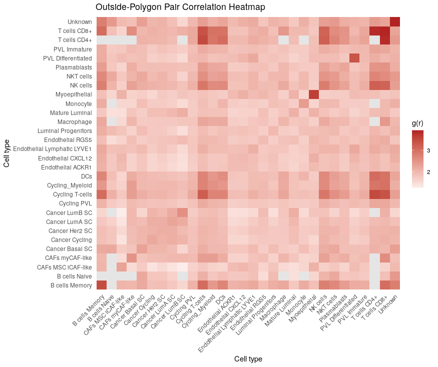
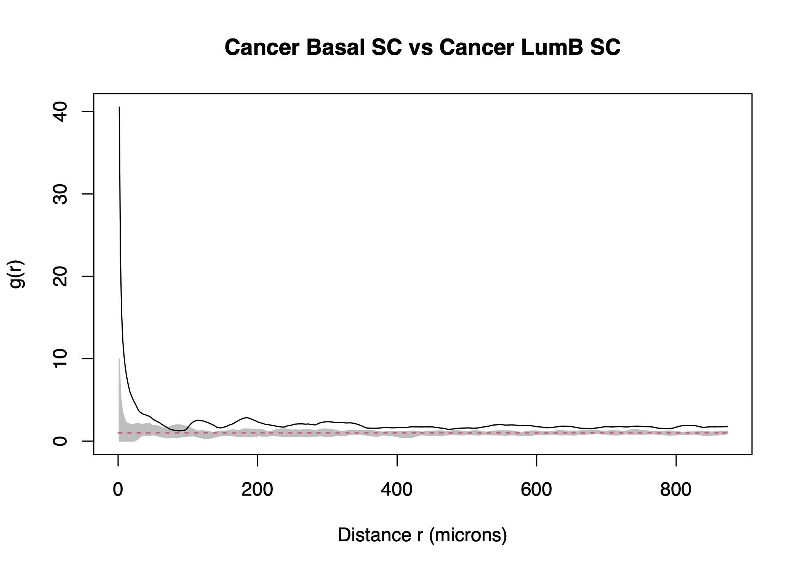

PCF Analysis
pcf-analysis.RmdIntroduction
stGradient includes optimized helpers for spatstat-based
Pair Correlation Function (PCF) analysis. These functions specifically
analyze spatial co-occurrence of cell types outside
tumor polygons, characterizing the peritumoral microenvironment
architecture.
Prerequisites
PCF analysis requires the spatstat.geom and
spatstat.explore packages:
install.packages(c("spatstat.geom", "spatstat.explore"))You also need a Seurat object with polygons defined (see Region Selection).
Computing PCF Summary
Calculate cross-type PCF values at a specific target distance:
library(stGradient)
pcf_summary <- calculate_pcf_outside_summary(
seurat_obj = seurat_obj,
polygons = auto_polygons,
distance = 200,
min_cells = 10,
celltype_col = "singleR.predicted.id.brcaAtlas",
include_self_pairs = TRUE,
ordered_pairs = FALSE
)Heatmap Visualization
Visualize all pairwise PCF values as a heatmap:
plot_pcf_outside_heatmap(pcf_summary, midpoint = 1)
The midpoint at 1 represents complete spatial randomness, with warm colors indicating co-occurrence and cool colors indicating avoidance.
Envelope Curves
Generate Monte Carlo envelope curves for all cell-type pairs to assess statistical significance:
env_list <- plot_pcf_outside_pair_envelopes(
seurat_obj = seurat_obj,
polygons = auto_polygons,
celltype_col = "singleR.predicted.id.brcaAtlas",
min_cells = 10,
include_self_pairs = FALSE,
ordered_pairs = FALSE,
nsim = 39,
bw = 10,
file = "pcf_outside_all_pairs.pdf"
)This creates a multi-page PDF with one page per cell-type pair showing the observed PCF against simulation envelopes. Points outside the envelope represent statistically significant spatial patterns.
Single-Pair PCF Plot
For focused analysis of specific cell-type pairs:
plot_pcf_pair_gg(env_list[["TypeA_vs_TypeB"]])
Notes
- These PCF helpers analyze only cells outside polygons by design
- Increasing
nsimimproves envelope precision but increases computation time - The
bwparameter controls PCF bandwidth smoothing - Underlying computation uses the
spatstatecosystem
Next Steps
- Gene-Distance Analysis — model gene expression as a function of boundary distance